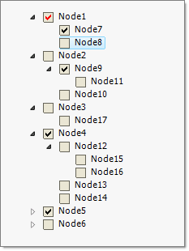

Using Checkboxes
Enable checkboxes by setting the RadTreeView CheckBoxes boolean property to true. By default all nodes display checkboxes if
the Checkboxes__property is true. To suppress showing a checkbox next to a particular RadTreeNode set the node
__CheckType property to None. To check a node programmatically, use the Checked or
CheckState property of RadTreeNode. When the user clicks a checkbox the __NodeCheckChanged__event
fires passing in a RadTreeViewEventArgs that contains the checked Node.
Tri-State Checkboxes
Tri-state checkboxes in addition to having checked and unchecked states also have a "indeterminate" state. To enable this
feature set the TriStateMode property of RadTreeView to true. The screen shot below shows that "Node1" is in
Indeterminate state to indicate that its children are not all checked.
When TriStateMode is set to true, the CheckBoxes property is also set to true automatically.
To programmatically set the state when TriStateMode is true assign the CheckState
property one of the ToggleState enumeration values.
Option Tree Support
RadTreeView the supports option trees that allows radio buttons and
check boxes to be mixed in order to form an arbitrary complex option tree.
The only limitation is that all sibling nodes must have either check boxes or radio buttons.
Check boxes and radio buttons can be mixed in a single RadTreeNodeCollection.
The RadTreeNode__property that control the type of option element to
be shown (check box or radio button) is __CheckType:
[C#]
RadTreeNode Node1 = new RadTreeNode("Node1");
Node1.Expanded = true;
Node1.CheckType = CheckType.RadioButton;
RadTreeNode Node2 = new RadTreeNode("Node2");
RadTreeNode Node3 = new RadTreeNode("Node3");
RadTreeNode Node4 = new RadTreeNode("Node4");
radTreeView1.Nodes.Add(Node1);
radTreeView1.Nodes.Add(Node2);
Node1.Nodes.Add(Node3);
Node1.Nodes.Add(Node4);
[VB.NET]
Dim Node1 As New RadTreeNode("Node1")
Node1.Expanded = True
Node1.CheckType = ChildListType.OptionList
Dim Node2 As New RadTreeNode("Node2")
Dim Node3 As New RadTreeNode("Node3")
Dim Node4 As New RadTreeNode("Node4")
RadTreeView1.Nodes.Add(Node1)
RadTreeView1.Nodes.Add(Node2)
Node1.Nodes.Add(Node3)
Node1.Nodes.Add(Node4)
'#End Region
End Sub
'#Region doubleClick
Private Sub radTreeView1_DoubleClick(ByVal sender As Object, ByVal e As EventArgs)
Dim args As MouseEventArgs = TryCast(e, MouseEventArgs)
Dim clickedNode As RadTreeNode = RadTreeView1.GetNodeAt(args.X, args.Y)
If clickedNode IsNot Nothing Then
MessageBox.Show("Node Text: " & clickedNode.Text & " Node Value: " & clickedNode.Tag)
End If
End Sub
'#End Region
'#Region addNodes
Private Sub AddNodes()
Dim Node1 As New RadTreeNode("Node1")
Node1.Tag = 1234
Node1.BackColor = Color.Blue
Dim Node2 As New RadTreeNode("Node2")
Dim Node3 As New RadTreeNode("Node3")
Dim Node4 As New RadTreeNode("Node4")
RadTreeView1.Nodes.Add(Node1)
RadTreeView1.Nodes.Add(Node2)
Node1.Nodes.Add(Node3)
Node2.Nodes.Add(Node4)
'Alternative methods for adding nodes
'RadTreeNode Node1 = radTreeView1.Nodes.Add("Node1");
'RadTreeNode Node2 = radTreeView1.Nodes.Add("Node2");
'Node1.Nodes.Add("Node3");
'Node2.Nodes.Add("Node4");
End Sub
'#End Region
'#Region removeNodes
Private Sub RemoveNodes()
'Remove a single node
RadTreeView1.Nodes(0).Remove()
' removes all nodes from TreeView
RadTreeView1.Nodes.Clear()
End Sub
'#End Region
End Class